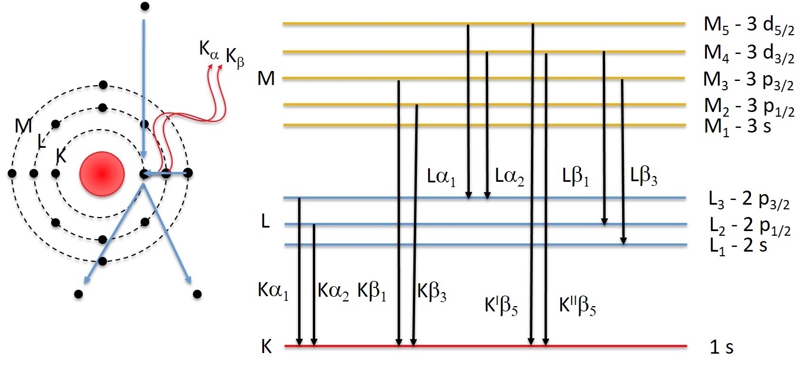
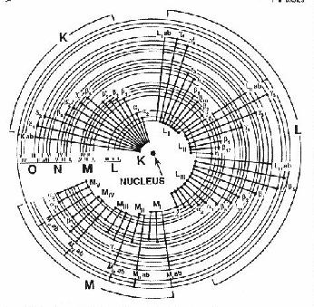

Chapter 4: Spectroscopy
Characteristic X-Rays¶

part of
MSE672: Introduction to Transmission Electron Microscopy
Spring 2026 by Gerd Duscher
Microscopy Facilities Institute of Advanced Materials & Manufacturing Materials Science & Engineering The University of Tennessee, Knoxville
Background and methods to analysis and quantification of data acquired with transmission electron microscopes.
Load relevant python packages¶
Check Installed Packages¶
[2]:
import sys
import importlib.metadata
def test_package(package_name):
"""Test if package exists and returns version or -1"""
try:
version = importlib.metadata.version(package_name)
except importlib.metadata.PackageNotFoundError:
version = '-1'
return version
if test_package('pyTEMlib') < '0.2026.01.1':
print('installing pyTEMlib')
!{sys.executable} -m pip install --upgrade pyTEMlib -q
print('done')
done
First we import the essential libraries¶
All we need here should come with the annaconda or any other package
[3]:
%matplotlib widget
import matplotlib.pyplot as plt
import numpy as np
import sys
import os
if 'google.colab' in sys.modules:
from google.colab import output
from google.colab import drive
output.enable_custom_widget_manager()
import pyTEMlib
__notebook__ = 'CH4_14-Characteristic-X_Rays'
__notebook_version__ = '2026_01_18'
X-Ray Families¶
The case is not always as simple as in the case of the carbon atom in the Introduction
As the atomic number \(Z\) increases the number of electrons in the respective energy states increases. With increasing complexity of the shell structure more options for relaxtions are available with different probabilities.
For example a Na atom which has an M-shell The 1s state can be filled by an L- or an M-shell, producing two different characteristic X-rays:
K-L\(_{2,3} (\)K:nbsphinx-math:alpha`$): $E_X = :math:`E_K- E_L = 104 eV
K-M\(_{2,3} (\)K:nbsphinx-math:beta`$): $E_X = :math:`E_K- E_M = 1071 eV
For heavier atoms than sodium more options exist:

X-ray Nomenclature¶
Two systems are in use for naming characteristic X-ray lines.
The oldest one is the Siegbahn system in wich first the shell where the ionization occured is listed and then a greek letter that suggests the order of their families by their relative intensity (\(\alpha>\beta>\gamma>\eta>\zeta\)).
For closely related memebers of a family additionally numebrs are attched such as \(L \beta_1\).
While most commercial software still uses the Siegbahn system the International Union of Pure and Applied Chemistry (IUPAC) has officially changed the system to a protocol that first dentoes the subshell were the ionization occured and followed with the term that indicates from which subshell the relaxation originates.
So \(K\alpha_1\) is replaced by \(K-L_3\).

Siegbahn |
—–IUPAC—– |
Siegbahn |
—–IUPAC—– |
Siegbahn |
—–IUPAC—– |
|---|---|---|---|---|---|
\(K\alpha_1\) |
\(K-L_3\) |
\(L\alpha_1\) |
\(L_3-M_5\) |
\(M\alpha_1\) |
\(M_5-N_7\) |
\(K\alpha_2\) |
\(K-L_2\) |
\(L\alpha_2\) |
\(L_3-M_4\) |
\(M\alpha_2\) |
\(M_5-N_6\) |
\(K\beta_1\) |
\(K-M_3\) |
\(L\beta_1\) |
\(L_2-M_4\) |
\(M\beta\) |
\(M_4-N_6\) |
\(K\beta_2\) |
\(K-N_{2,3}\) |
\(L\beta_2\) |
\(L_3-N_5\) |
\(M\gamma\) |
\(M_3-N_5\) |
\(L\beta_3\) |
\(L_1-M_3\) |
\(M\zeta\) |
\(M_{4,5}-N_{2,3}\) |
||
\(L\beta_4\) |
\(L_1-M_2\) |
\(M_3-N_1\) |
|||
\(L\gamma_1\) |
\(L_2-N_4\) |
\(M_2-N_1\) |
|||
\(L\gamma_2\) |
\(L_1-N_2\) |
\(M_3-N_{4,5}\) |
|||
\(L\gamma_3\) |
\(L_1-N_3\) |
\(M_3-O_1\) |
|||
\(L\gamma_4\) |
\(L_1-O_4\) |
\(M_3-O_{4,5}\) |
|||
\(L\zeta\) |
\(L_2-M_1\) |
\(M_2-N_4\) |
|||
\(L\iota\) |
\(L_3-M_1\) |
X-ray Weight of Lines¶
Within the excitation probaility of the characteristic X-ray lines are not equal.
For sodium (see above for energies), the ratio of \(K-L_{2,3}\) to \(K-M\) is approximatively 150: 1.
This ratios between the lines are a strong function of the atomic number \(Z\).
We load the data of the X-Ray lines from data from NIST, the line weights are taken from the Program DTSA-II, which is the quasi-standard in EDS analysis.
[4]:
x_sections = pyTEMlib.utilities.get_x_sections()
K_M5 = []
ele_K_M5 = []
L3_M1 = []
ele_M3_M1 = []
L1_N3 = []
ele_L1_N3 = []
L3_N5 =[]
ele_L3_N5 = []
L2_M4 = []
ele_L2_M4 = []
for element in range(5,82):
if 'K-M5' in x_sections[str(element)]['lines']:
K_M5.append(x_sections[str(element)]['lines']['K-M5']['weight']/x_sections[str(element)]['lines']['K-L3']['weight'])
ele_K_M5.append(element)
if 'L3-M5' in x_sections[str(element)]['lines']:
if 'L3-M1' in x_sections[str(element)]['lines']:
L3_M1.append(x_sections[str(element)]['lines']['L3-M1']['weight']/x_sections[str(element)]['lines']['L3-M5']['weight'])
ele_M3_M1.append(element)
if 'L1-N3' in x_sections[str(element)]['lines']:
L1_N3.append(x_sections[str(element)]['lines']['L1-N3']['weight']/x_sections[str(element)]['lines']['L3-M5']['weight'])
ele_L1_N3.append(element)
if 'L3-N5' in x_sections[str(element)]['lines']:
L3_N5.append(x_sections[str(element)]['lines']['L3-N5']['weight']/x_sections[str(element)]['lines']['L3-M5']['weight'])
ele_L3_N5.append(element)
if 'L2-M4' in x_sections[str(element)]['lines']:
L2_M4.append(x_sections[str(element)]['lines']['L2-M4']['weight']/x_sections[str(element)]['lines']['L3-M5']['weight'])
ele_L2_M4.append(element)
ele = np.linspace(1,94,94)
plt.figure()
plt.plot(ele_K_M5 ,K_M5, label = 'K-M$_3$ / K-L$_3$')
plt.plot(ele_M3_M1,L3_M1, label = 'L$_3$-M$_1$ / L$_3$-M$_5$')
plt.plot(ele_L1_N3,L1_N3, label = 'L$_1$-N$_3$ / L$_3$-M$_5$')
plt.plot(ele_L3_N5,L3_N5, label = 'L$_3$-N$_5$ / L$_3$-M$_5$')
plt.plot(ele_L2_M4,L2_M4, label = 'L$_2$-M$_4$ / L$_3$-M$_5$')
plt.ylabel('')
plt.gca().set_yscale('log')
plt.xlabel('atomic number')
plt.ylabel('relative weights of lines')
plt.legend();
Characteristic X-ray Intensity¶
The cross section \(Q_I\) (probability of excitation expressed as area) of an isolated atom ejecting an electron bound with energy \(E_c\) (keV) by an electron with energy \(E\) (keV) is:
where:
\(n_s\): number of electrons in shell or subshell \(s\)
\(b_s\), \(c_s\): constants for a given shell \(s\)
\(E\): energy of the exciting electron
\(E_𝑐\): Critical ionization energy
For example for a K shell (Powell 1979): \(n_K = 2\), \(b_K = 0.35\), and \(c_k = 1\)
For silion the characteristic energy or binding energy for the K shell: \(E_c = 1.838\) keV
The relationship between energy of the exciting electron and critical energy is important and is expressed as overvoltage \(U\):
The overvoltage of the primary electron with energy \(E_0\) is expressed as:
We can express the cross section with the overvoltage:
[3]:
n_K = 2.0
b_K = 0.35
c_K = 1.0
# Silicon
E_c_Si = 1.838
# Iron
E_c_Fe = 6.401
E = np.linspace(0,30,2048)+0.05
U = E/E_c_Si
Q_Si = 6.51*1e-20*n_K*b_K/(U * E_c_Si**2)* np.log(c_K * U)
U = E/E_c_Fe
Q_Fe = 6.51*1e-20*n_K*b_K/(U * E_c_Fe**2)* np.log(c_K * U)
plt.figure()
plt.plot(E,Q_Si, label ='Si')
plt.plot(E,Q_Fe, label ='Fe')
plt.ylim(0.,Q_Si.max()*1.1)
plt.xlabel('excitation energy (keV)')
plt.ylabel('Q (inizations/[e$^-$ (atoms /cm$^2$)])')
plt.legend();
[4]:
x_sections['25']['M4']
[4]:
{'filename': 'None',
'excl before': 5,
'excl after': 50,
'onset': 7.26159,
'factor': 0.6666666666666666}
[5]:
"""
(Casnati's equation) was found to fit cross-section data to
typically better than +-10% over the range 1<=Uk<=20 and 6<=Z<=79."
Note: This result is for K shell. L & M are much less well characterized.
C. Powell indicated in conversation that he believed that Casnati's
expression was the best available for L & M also.
"""
shell_occupancy={'K':2,'L1':2,'L2':2,'L3':4,'M1':2,'M1':2,'M2':2,'M3':4,'M4':4,'M5':6}
import scipy.constants as const
res = 0.0;
beamE = 30
rel = []
Z= []
shell = 'M4'
for element in range(25,56):
ee = x_sections[str(element)][shell]['onset']#getEdgeEnergy();
u = ee/beamE;
#print(u)
if(u > 1.0):
u2 = u * u;
phi = 10.57 * np.exp((-1.736 / u) + (0.317 / u2));
#psi = Math.pow(ee / PhysicalConstants.RydbergEnergy, -0.0318 + (0.3160 / u) + (-0.1135 / u2));
psi = np.power(ee / const.Rydberg, -0.0318 + (0.3160 / u) + (-0.1135 / u2));
i = ee / const.electron_mass# PhysicalConstants.ElectronRestMass;
t = beamE / const.electron_mass#PhysicalConstants.ElectronRestMass;
f = ((2.0 + i) / (2.0 + t)) * np.sqrt((1.0 + t) / (1.0 + i)) * np.power(((i + t) * (2.0 + t) * np.sqrt(1.0 + i))/ ((t * (2.0 + t) * np.sqrt(1.0 + i)) + (i * (2.0 + i))), 1.5);
getGroundStateOccupancy = shell_occupancy[shell]
res = ((getGroundStateOccupancy * np.sqrt((const.value('Bohr radius') * const.Rydberg) / ee) * f * psi * phi * np.log(u)) / u);
rel.append(res)
Z.append(element)
#print(res)
plt.figure()
plt.title(f"Casnati's cross section for beam energy {beamE:.0f} keV")
plt.plot(Z,rel)
plt.xlabel('atomic number Z')
plt.ylabel('Q [barns]');
Even though the cross section raises fast with overvoltage \(U\), too low overvoltage leads to a small cross section, which results in poor excitation of the X-ray line.
We can also see that the intial overvoltage \(U_0\) varies with atomic number \(Z\), which will affect the relative generation of X-rays from different elements.
X-ray Production in a Thick Solid Sample¶
If the sample is sufficient thick so that all electrons interact ( several micrometers) the X-ray intensity is found to follow an expression fo the form:
where:
\(i_p\): beam current
\(n\): exponent \(n\) depends on particular element and shell (Lifshin et al. 1980)
The exponent \(n\) is ususally between 1.5 and 2. See what changes in the plot below if you change this exponent.
[6]:
n = 1.5
U_0 = np.linspace(1,10, 2048)
i_p = 1.0 # in nA
I = i_p * (U_0-1.0)**n
plt.figure()
plt.plot(U_0,I)
plt.axhline(y=0., color='gray', linewidth=0.5)
plt.xlabel('overvoltage $U_0$ [kV]')
plt.ylabel('$I$ [nA]');
X-ray Production in a Thin Foil¶
Now we have all the ingeedients to look at the total generation of X-rays.
The number of photons \(n_X\) produced in a thin foil of thickness \(t\) is :
\(n_X\) [photons/e\(^-\)]
\(Q_I(E)\) [ ionizations/e\(^-\) (atoms / cm\(^2\))): ionization cross section
\(\omega\) [X-rays/ ionization]: fluorescent yield = number of X-rays generated per ionization
$ N_A$ [atoms per mol]: Avogadro’s number
\(A\) [g/moles]: atomic weight
\(\rho\) [g/cm\(^3\)]: density of sample
\(t\) [cm]: thickness of sample
The number of X-rays increase linearly with the number of atoms per unit area ($N_A \frac{1}{A} :nbsphinx-math:`rho ` t $).
In the graph above, we can see the importance of the overvoltage \(U\) by how the intensity increase with increasing \(U_0\)
Quiz¶
Why is the overvoltage increasing so much while the cross section remains rather constant above the threshold?